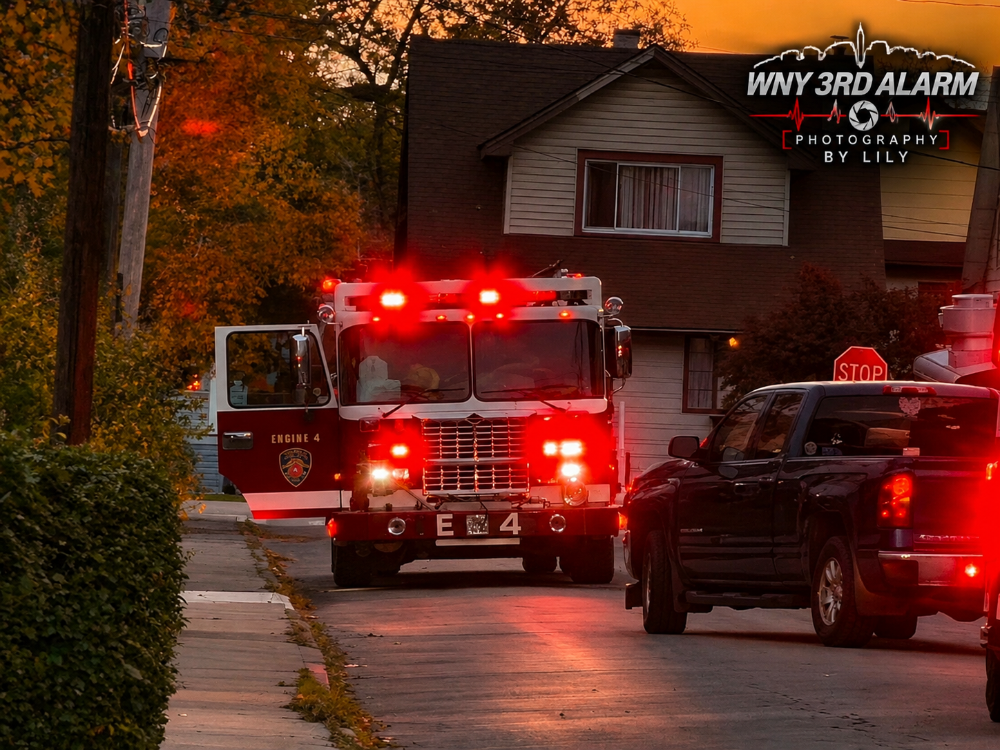
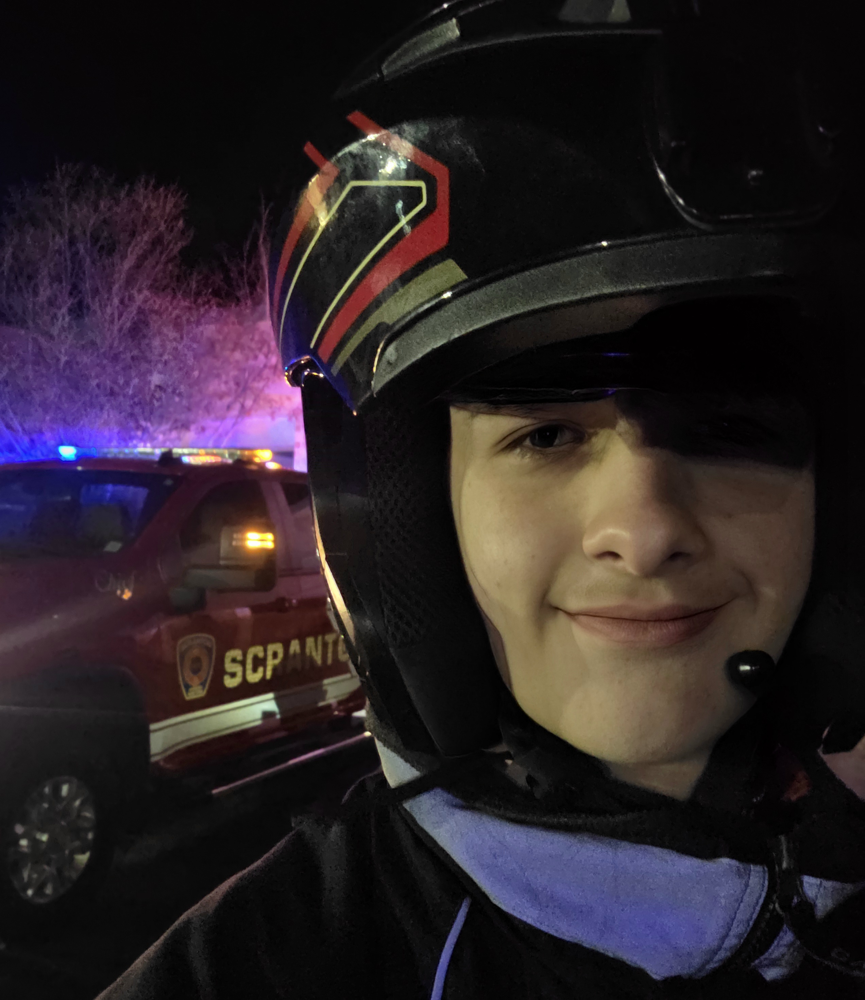

Our Mission
Preserve moments, share photography, and show appreciation for the emergency-services community.
Capturing the Call. Preserving the Tradition. Sharing fire apparatus photography and celebrating the emergency-services community across Western New York.
VIEW GALLERY ABOUT OUR GROUPWNY 3RD ALARM FIRE BUFFS is a Western New York-based fire-buffing and photography group. We document fire apparatus, public events, and the people and traditions of the fire service from appropriate public locations.
Preserve moments, share photography, and show appreciation for the emergency-services community.
Respect departments, responders, residents, privacy, and all scene restrictions.
Western New York, with activities and photography shared when appropriate.

📸 Photographer: Lily
WNY 3RD ALARM | Weekly Photo Spotlight
Explore WNY 3RD ALARM photography. Filter by category or photographer and click any photo to view it fullscreen.
A snapshot of the photography currently published on our website.
Counts reflect photos and photographer profiles displayed on this website, not total group membership or live incident activity.
WNY 3RD ALARM WEATHER OPERATIONS
Official National Weather Service information for Western New York.
Loading official alerts...
Loading latest observation...
Weather information provided by NOAA/NWS.
For safety-critical decisions, verify alerts directly with the National Weather Service.
Publicly approved, general incident summaries. Exact addresses, personal information, and responder locations are not displayed.
No approved public updates have been posted.
Checking public updates…
This is not a live dispatch feed or an emergency alert service. Call 911 for emergencies. Active911 is not connected. Only public, approved summaries belong in the feed file.
Meet the photographers capturing fire apparatus and emergency-services moments across Western New York.
Fire apparatus and emergency-services photography.
📸 Featured: Engine 4 at Sunset
VIEW PHOTOS📸 Featured: What he looks like
VIEW PHOTOS
Fire apparatus photography and website development.
VIEW PHOTOSMeet the WNY 3RD ALARM team.
Website, technology, and digital systems.
Group coordination and member support.
Photography and group participation.
Only share member details that each person has agreed to make public.
Official group updates will appear here. Add a date and short update whenever you have news to share.
Our website is live. Check back for photography, community-event updates, and announcements from the group.
Public events and appearances may be listed here once confirmed. No live incident responses or real-time member movements are published.
Check back for confirmed dates and details.
🚨 RECRUITMENT OPEN
WNY 3RD ALARM FIRE BUFFS is looking for dedicated members across Western New York! Help us grow our photography community, document fire apparatus, and participate in community events.
Membership applications are reviewed by group leadership. Respect for emergency personnel and scene safety is required.
We welcome interest from people in Western New York who share an appreciation for fire apparatus photography and the fire-service community. Membership is subject to group review and expectations.
Respect, responsibility, safe conduct, privacy, and a genuine interest in photography and community events.
Members do not self-dispatch, enter emergency scenes, interfere with responders, or use restricted access. Follow all official instructions.
Fill out our official membership application to be considered for WNY 3RD ALARM FIRE BUFFS.
For general questions, photography inquiries, community-event information, or membership interest, send us a message.
Email:
wny3rdalarm716@gmail.com
TikTok:
Follow Us on TikTok